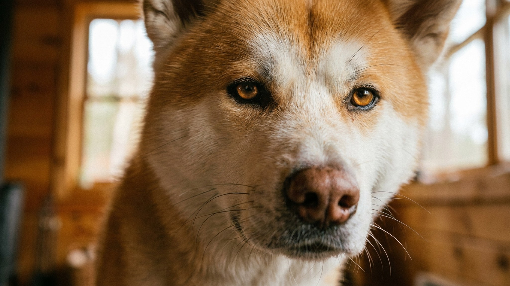

Акита-ину — собака с обложки: мощная, красивая, с преданностью, вошедшей в легенду благодаря Хатико. Но за этим образом скрывается порода с одним из самых сложных характеров в кинологии. Акита не слушается всех подряд, плохо уживается с другими животными и способна принять самостоятельное решение вопреки команде хозяина. Ниже — что это значит на практике и как не совершить ошибку при выборе породы.
🐾 Всё о вашем питомце — в одном приложении
AI-ветеринар, дневник, напоминания о прививках и уходе. Установите AnimaLife — это бесплатно, в Telegram и MAX.
Акита-ину — порода с ярко выраженной «монопривязанностью». Собака выбирает одного человека и строит с ним глубокую связь. Остальные члены семьи воспринимаются как «нейтральные» — она терпит их, но не ищет контакта. Чужих людей акита встречает настороженно и никогда не бросится знакомиться с первым встречным.
Это не дефект — это исторически заложенное качество охотничьей и сторожевой породы. Но новичку, который ждёт дружелюбной «лайки для всех», акита преподнесёт неприятный сюрприз.
Акита умна — но интеллект у неё направлен не на угождение хозяину, а на оценку ситуации. Если собака считает команду бессмысленной, она её проигнорирует. Это принципиальное отличие от пород с высокой мотивацией к сотрудничеству (лабрадор, голден, бордер-колли).
Акита-ину обладает выраженным охотничьим инстинктом и склонностью к доминированию над сородичами. Две акиты одного пола в одном доме — частый источник конфликтов. С кошками и мелкими животными совместная жизнь возможна, но только при ранней социализации — когда щенок рос рядом с ними с первых месяцев.
Взрослая акита, впервые встретившая кошку в 2 года, скорее всего воспримет её как добычу. Это не агрессия — это инстинкт. Менять его сложно и небезопасно без работы с опытным кинологом.
До 14–16 недель щенок акиты должен увидеть как можно больше: людей разного возраста и внешности, детей, других собак, городской шум, лифты, транспорт. Это не прогулки для удовольствия — это формирование нервной системы. Пропустить этот период означает получить взрослую собаку с устойчивыми поведенческими проблемами.
Хороший заводчик начинает социализацию ещё до передачи щенка. Спросите об этом напрямую — это один из главных критериев выбора питомника.
Акита-ину — для тех, кто готов вложить время и последовательность и получить взамен собаку с исключительной преданностью и достоинством. Это одна из самых сильных пород в мире, и она это знает.
🐾 Спросите AI-ветеринара прямо сейчас
AnimaLife — приложение, где AI-ветеринар отвечает на вопросы о кошке или собаке 24/7. Бесплатно, без записи и очередей.
🐾 Понравился разбор?
Подпишитесь на канал — каждый день разбираем по одному тревожному симптому у кошек и собак: что в пределах нормы, а когда пора к врачу. Подпишитесь, чтобы не пропустить разбор, который может спасти здоровье вашего питомца.
Материал носит информационный характер и не заменяет очную консультацию ветеринара.